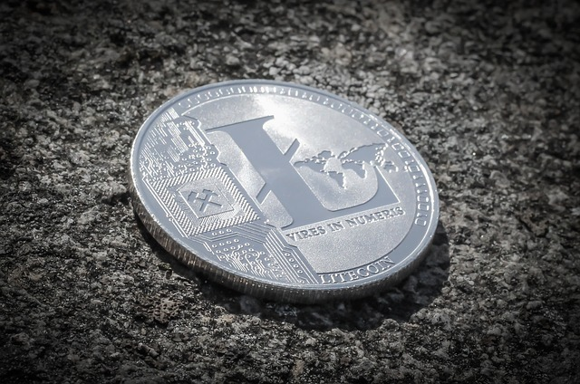

Qu’est-ce que Litecoin?
Le Litecoin (LTC) est une monnaie virtuelle décentralisée créée le 7 octobre 2011 par un ancien employé de Google Charlie Lee qui s'est inspiré du code du bitcoin. Il souhaitait que cette nouvelle crypto-monnaie soit comme l’argent métal numérique, au même titre que le Bitcoin est considéré comme de l'or numérique.
Cette crypto monnaie permet de faire le paiement n'importe où dans le monde sans qu'aucun intermédiaire n'ait à traiter la transaction. Les paiements sont incroyablement rapides et extrêmement bon marché.

C’est quoi la différence entre Litecoin et Bitcoin?
-
Une création de blocs de Litecoin quatre fois plus rapide avec un intervalle moyen de 2 minutes et 30 secondes, contre 10 minutes pour Bitcoin.
-
La quantité de LTC en circulation est en effet limitée à 84 millions, soit quatre fois plus que le bitcoin qui est limité à 21 millions d'unités.
-
La preuve de travail de litecoin utilise la fonction de hachage scrypt contrairement au bitcoin qui utilise le SHA-256.
Avantage :
-
Des transactions plus rapides
-
Des frais de transactions très bas.
-
Génération de blocs plus rapide.
-
Les Litecoins peuvent être échangés contre d'autres devises sans devoir passer par une plateforme d'échange, ce qui vous permet d'économiser de l'argent.
Inconvénients :
-
N’est pas aussi populaire que Bitcoin.
-
Ses similitudes avec Bitcoin créent des doutes quant à sa croissance et sa capacité de fonctionnement à long terme.
-
Les améliorations techniques apportées au réseau Litecoin restent peu importantes.